10 minutes to… OGGM-shop as a data provider for your worksflows#
In this notebook we illustrate how the OGGM shop can act as a data provider for glacier modelling or machine learning workflows.
We use preprocessed glacier directories that include most datasets available in the OGGM shop. These datasets go beyond what is required for the standard OGGM workflow and include additional information such as velocity, thickness estimates, and other glacier attributes that can be useful for data-driven approaches (e.g. machine learning).
Tags: beginner, shop, workflow
Preprocessed directories with additional products#
We are going to use the South Glacier example taken from the ITMIX experiment. It is a small (5.6 km2) glacier in Alaska.
## Libs
import matplotlib.pyplot as plt
import numpy as np
import pandas as pd
import xarray as xr
import salem
# OGGM
import oggm.cfg as cfg
from oggm import utils, workflow, tasks, graphics
# Initialize OGGM and set up the default run parameters
cfg.initialize(logging_level='WARNING')
cfg.PARAMS['use_multiprocessing'] = False
# Local working directory (where OGGM will write its output)
cfg.PATHS['working_dir'] = utils.gettempdir('OGGM_Toy_Thickness_Model')
# We use the preprocessed directories with additional data in it: "W5E5_w_data"
# the old 2023.3 preprocessed gdir had "0"-values instead of NaN-values for the Millan2022 data. This was corrected in the 2025.6 gdirs.
base_url = 'https://cluster.klima.uni-bremen.de/~oggm/gdirs/oggm_v1.6/L3-L5_files/2025.6/elev_bands_w_data/W5E5/per_glacier/'
gdirs = workflow.init_glacier_directories(['RGI60-01.16195'], from_prepro_level=3, prepro_base_url=base_url, prepro_border=10)
2026-03-09 20:55:20: oggm.cfg: Reading default parameters from the OGGM `params.cfg` configuration file.
2026-03-09 20:55:20: oggm.cfg: Multiprocessing switched OFF according to the parameter file.
2026-03-09 20:55:20: oggm.cfg: Multiprocessing: using all available processors (N=4)
2026-03-09 20:55:20: oggm.workflow: init_glacier_directories from prepro level 3 on 1 glaciers.
2026-03-09 20:55:20: oggm.workflow: Execute entity tasks [gdir_from_prepro] on 1 glaciers
# Pick our glacier
gdir = gdirs[0]
gdir
<oggm.GlacierDirectory>
RGI id: RGI60-01.16195
Region: 01: Alaska
Subregion: 01-05: St Elias Mtns
Glacier type: Glacier
Terminus type: Land-terminating
Status: Glacier or ice cap
Area: 5.655 km2
Lon, Lat: (-139.131, 60.822)
Grid (nx, ny): (105, 120)
Grid (dx, dy): (43.0, -43.0)
OGGM-Shop datasets#
We are using here the preprocessed glacier directories (_w_data) that contain more data than the default ones:
with xr.open_dataset(gdir.get_filepath('gridded_data')) as ds:
ds = ds.load()
# List all variables
ds
<xarray.Dataset> Size: 593kB
Dimensions: (y: 120, x: 105)
Coordinates:
* y (y) float32 480B 6.747e+06 6.747e+06 ... 6.742e+06
* x (x) float32 420B 5.992e+05 5.993e+05 ... 6.037e+05
Data variables: (12/14)
topo (y, x) float32 50kB 2.501e+03 ... 2.144e+03
topo_smoothed (y, x) float32 50kB 2.507e+03 ... 2.166e+03
topo_valid_mask (y, x) int8 13kB 1 1 1 1 1 1 1 1 ... 1 1 1 1 1 1 1
glacier_mask (y, x) int8 13kB 0 0 0 0 0 0 0 0 ... 0 0 0 0 0 0 0
glacier_ext (y, x) int8 13kB 0 0 0 0 0 0 0 0 ... 0 0 0 0 0 0 0
consensus_ice_thickness (y, x) float32 50kB nan nan nan nan ... nan nan nan
... ...
itslive_vy (y, x) float32 50kB 26.01 22.5 ... 0.2009 0.1959
millan_ice_thickness (y, x) float32 50kB 181.9 184.7 186.1 ... 0.0 0.0
millan_v (y, x) float32 50kB 42.7 41.17 39.01 ... nan nan
millan_vx (y, x) float32 50kB -27.83 -27.46 ... nan nan
millan_vy (y, x) float32 50kB 32.39 30.67 26.88 ... nan nan
hugonnet_dhdt (y, x) float32 50kB -0.3079 -0.2949 ... -0.003762
Attributes:
author: OGGM
author_info: Open Global Glacier Model
pyproj_srs: +proj=utm +zone=7 +datum=WGS84 +units=m +no_defs
max_h_dem: 3165.046
min_h_dem: 1816.4698
max_h_glacier: 3165.046
min_h_glacier: 1971.5496That’s already quite a lot! We have access to a bunch of data for this glacier, lets have a look. We prepare the map first:
smap = ds.salem.get_map(countries=False)
smap.set_shapefile(gdir.read_shapefile('outlines'))
smap.set_topography(ds.topo.data);
ITS_LIVE velocity data#
Let’s start with the ITS_LIVE velocity data. OGGM provides data from ITS_LIVE v2, whic is a composite of the [2014-2022] average:
# get the velocity data
u = ds.itslive_vx.where(ds.glacier_mask)
v = ds.itslive_vy.where(ds.glacier_mask)
ws = ds.itslive_v.where(ds.glacier_mask)
The .where(ds.glacier_mask) command will remove the data outside of the glacier outline.
# get the axes ready
f, ax = plt.subplots(figsize=(9, 9))
# Quiver only every N grid point
us = u[1::3, 1::3]
vs = v[1::3, 1::3]
smap.set_data(ws)
smap.set_cmap('Blues')
smap.plot(ax=ax)
smap.append_colorbar(ax=ax, label='ice velocity (m yr$^{-1}$)')
# transform their coordinates to the map reference system and plot the arrows
xx, yy = smap.grid.transform(us.x.values, us.y.values, crs=gdir.grid.proj)
xx, yy = np.meshgrid(xx, yy)
qu = ax.quiver(xx, yy, us.values, vs.values)
qk = ax.quiverkey(qu, 0.82, 0.97, 10, '10 m yr$^{-1}$',
labelpos='E', coordinates='axes')
ax.set_title('ITS-LIVE velocity');
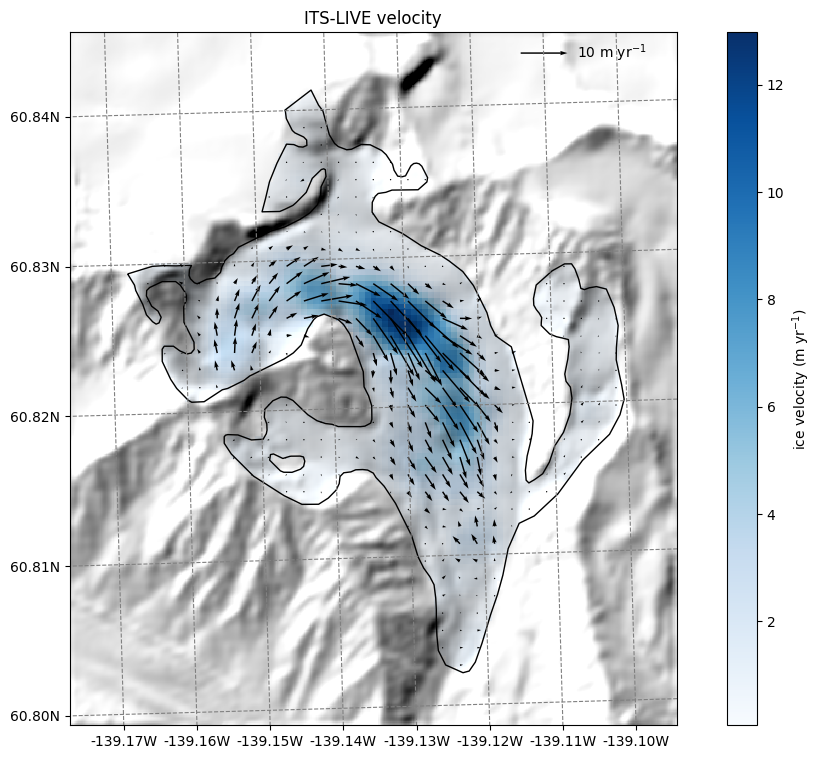
Millan 2022 velocity data#
Millan et al. (2022) published global velocities as well, which is more a snapshot of 2016-2017:
# get the velocity data
u = ds.millan_vx.where(ds.glacier_mask)
v = ds.millan_vy.where(ds.glacier_mask)
ws = ds.millan_v.where(ds.glacier_mask)
# get the axes ready
f, ax = plt.subplots(figsize=(9, 9))
# Quiver only every N grid point
us = u[1::3, 1::3]
vs = v[1::3, 1::3]
smap.set_data(ws)
smap.set_cmap('Blues')
smap.plot(ax=ax)
smap.append_colorbar(ax=ax, label='ice velocity (m yr$^{-1}$)')
# transform their coordinates to the map reference system and plot the arrows
xx, yy = smap.grid.transform(us.x.values, us.y.values, crs=gdir.grid.proj)
xx, yy = np.meshgrid(xx, yy)
qu = ax.quiver(xx, yy, us.values, vs.values)
qk = ax.quiverkey(qu, 0.82, 0.97, 10, '10 m yr$^{-1}$',
labelpos='E', coordinates='axes')
ax.set_title('Millan 2022 velocity');
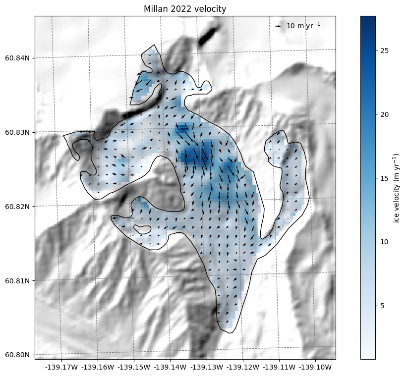
Thickness data from Farinotti 2019 and Millan 2022#
We also provide ice thickness data from Farinotti et al. (2019) and Millan et al. (2022) in the same gridded format.
# get the axes ready
f, ax = plt.subplots(figsize=(9, 9))
smap.set_cmap('viridis')
smap.set_data(ds.consensus_ice_thickness)
smap.plot(ax=ax)
smap.append_colorbar(ax=ax, label='ice thickness (m)')
ax.set_title('Farinotti 2019 thickness');
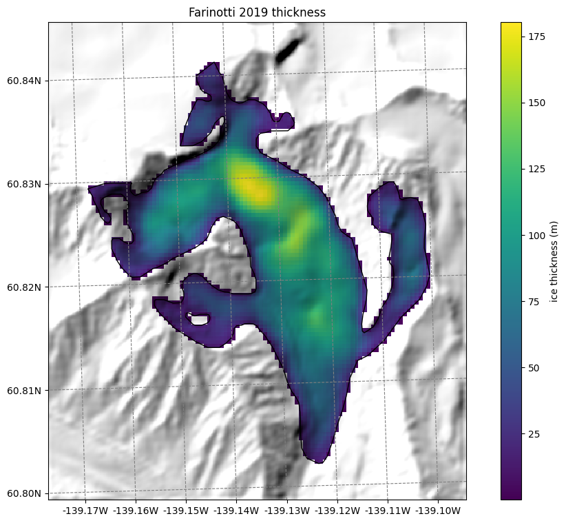
# get the axes ready
f, ax = plt.subplots(figsize=(9, 9))
smap.set_cmap('viridis')
smap.set_data(ds.millan_ice_thickness.where(ds.glacier_mask))
smap.plot(ax=ax)
smap.append_colorbar(ax=ax, label='ice thickness (m)')
ax.set_title('Millan 2022 thickness');
Hugonnet dh/dt maps#
Hugonnet et al., (2021) provides maps of glacier surface elevation change (2000-2020). We also reproject them to the glacier directory and provide them:
# get the axes ready
f, ax = plt.subplots(figsize=(9, 9))
smap.set_data(ds.hugonnet_dhdt.where(ds.glacier_mask))
smap.set_cmap('RdBu')
smap.set_plot_params(vmin=-3, vmax=3)
smap.plot(ax=ax)
smap.append_colorbar(ax=ax, label='dh/dt')
ax.set_title('Hugonnet dh/dt');
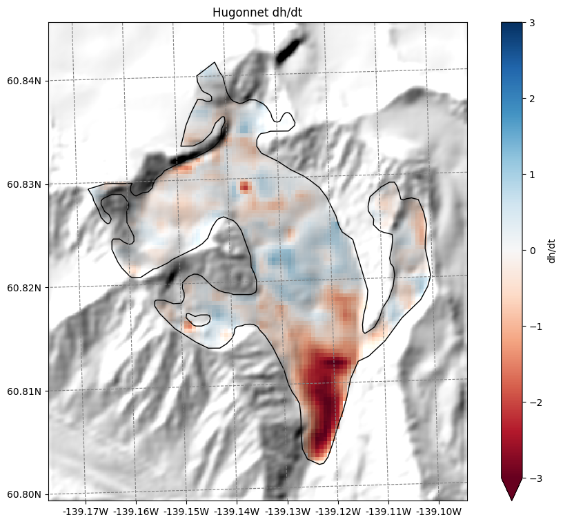
GlaThiDa ice thickness#
With v1.6.3, OGGM allows to fetch GlaThiDa point data for glaciers which have it:
df_gtd = pd.read_csv(gdir.get_filepath('glathida_data'))
df_gtd
| survey_id | date | elevation_date | latitude | longitude | elevation | thickness | thickness_uncertainty | flag | rgi_id | x_proj | y_proj | i_grid | j_grid | ij_grid | |
|---|---|---|---|---|---|---|---|---|---|---|---|---|---|---|---|
| 0 | 161 | 2011-01-01 | 2007-01-01 | 60.825257 | -139.155974 | NaN | 114 | 13.0 | NaN | RGI60-01.16195 | 600273.997908 | 6.744733e+06 | 25 | 52 | 0025_0052 |
| 1 | 161 | 2011-01-01 | 2007-01-01 | 60.825336 | -139.155234 | NaN | 124 | 6.0 | NaN | RGI60-01.16195 | 600314.002333 | 6.744743e+06 | 26 | 51 | 0026_0051 |
| 2 | 161 | 2011-01-01 | 2007-01-01 | 60.825184 | -139.155243 | NaN | 124 | 6.0 | NaN | RGI60-01.16195 | 600314.001755 | 6.744726e+06 | 26 | 52 | 0026_0052 |
| 3 | 161 | 2011-01-01 | 2007-01-01 | 60.825031 | -139.155215 | NaN | 124 | 6.0 | NaN | RGI60-01.16195 | 600315.997741 | 6.744709e+06 | 26 | 52 | 0026_0052 |
| 4 | 161 | 2011-01-01 | 2007-01-01 | 60.824931 | -139.155129 | NaN | 119 | 6.0 | NaN | RGI60-01.16195 | 600320.997450 | 6.744698e+06 | 26 | 52 | 0026_0052 |
| ... | ... | ... | ... | ... | ... | ... | ... | ... | ... | ... | ... | ... | ... | ... | ... |
| 3401 | 161 | 2011-01-01 | 2007-01-01 | 60.803228 | -139.122337 | NaN | 20 | 3.0 | NaN | RGI60-01.16195 | 602172.999100 | 6.742332e+06 | 69 | 107 | 0069_0107 |
| 3402 | 161 | 2011-01-01 | 2007-01-01 | 60.803199 | -139.122210 | NaN | 20 | 3.0 | NaN | RGI60-01.16195 | 602179.999968 | 6.742329e+06 | 69 | 108 | 0069_0108 |
| 3403 | 161 | 2011-01-01 | 2007-01-01 | 60.803081 | -139.122125 | NaN | 19 | 3.0 | NaN | RGI60-01.16195 | 602185.000440 | 6.742316e+06 | 69 | 108 | 0069_0108 |
| 3404 | 161 | 2011-01-01 | 2007-01-01 | 60.802984 | -139.122204 | NaN | 18 | 3.0 | NaN | RGI60-01.16195 | 602180.997158 | 6.742305e+06 | 69 | 108 | 0069_0108 |
| 3405 | 161 | 2011-01-01 | 2007-01-01 | 60.803052 | -139.123891 | NaN | 22 | 3.0 | NaN | RGI60-01.16195 | 602088.997810 | 6.742310e+06 | 67 | 108 | 0067_0108 |
3406 rows × 15 columns
ax = df_gtd.plot.scatter(
x='x_proj',
y='y_proj',
c='thickness',
cmap='viridis',
colorbar=True,
)
ax.set_aspect('equal')
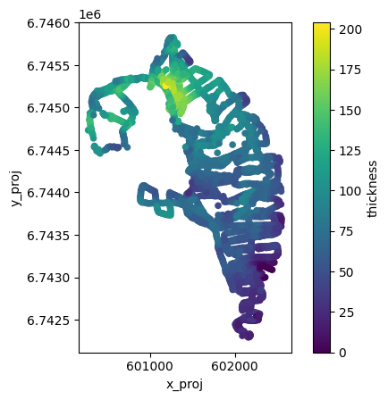
Some additional gridded attributes#
Let’s also add some attributes that OGGM can compute for us:
# Tested tasks
task_list = [
tasks.gridded_attributes,
tasks.gridded_mb_attributes,
]
for task in task_list:
workflow.execute_entity_task(task, gdirs)
2026-03-09 20:55:23: oggm.workflow: Execute entity tasks [gridded_attributes] on 1 glaciers
2026-03-09 20:55:23: oggm.workflow: Execute entity tasks [gridded_mb_attributes] on 1 glaciers
Let’s open the gridded data file again with xarray:
with xr.open_dataset(gdir.get_filepath('gridded_data')) as ds:
ds = ds.load()
# List all variables
ds
<xarray.Dataset> Size: 971kB
Dimensions: (y: 120, x: 105)
Coordinates:
* y (y) float32 480B 6.747e+06 6.747e+06 ... 6.742e+06
* x (x) float32 420B 5.992e+05 5.993e+05 ... 6.037e+05
Data variables: (12/23)
topo (y, x) float32 50kB 2.501e+03 ... 2.144e+03
topo_smoothed (y, x) float32 50kB 2.507e+03 ... 2.166e+03
topo_valid_mask (y, x) int8 13kB 1 1 1 1 1 1 1 1 ... 1 1 1 1 1 1 1
glacier_mask (y, x) int8 13kB 0 0 0 0 0 0 0 0 ... 0 0 0 0 0 0 0
glacier_ext (y, x) int8 13kB 0 0 0 0 0 0 0 0 ... 0 0 0 0 0 0 0
consensus_ice_thickness (y, x) float32 50kB nan nan nan nan ... nan nan nan
... ...
aspect (y, x) float32 50kB 5.822 5.722 ... 1.647 1.738
slope_factor (y, x) float32 50kB 3.872 3.872 ... 2.051 2.514
dis_from_border (y, x) float32 50kB 1.686e+03 ... 1.55e+03
catchment_area (y, x) float32 50kB nan nan nan nan ... nan nan nan
lin_mb_above_z (y, x) float32 50kB nan nan nan nan ... nan nan nan
oggm_mb_above_z (y, x) float32 50kB nan nan nan nan ... nan nan nan
Attributes:
author: OGGM
author_info: Open Global Glacier Model
pyproj_srs: +proj=utm +zone=7 +datum=WGS84 +units=m +no_defs
max_h_dem: 3165.046
min_h_dem: 1816.4698
max_h_glacier: 3165.046
min_h_glacier: 1971.5496The file contains several new variables with their description. For example:
ds.oggm_mb_above_z
<xarray.DataArray 'oggm_mb_above_z' (y: 120, x: 105)> Size: 50kB
array([[nan, nan, nan, ..., nan, nan, nan],
[nan, nan, nan, ..., nan, nan, nan],
[nan, nan, nan, ..., nan, nan, nan],
...,
[nan, nan, nan, ..., nan, nan, nan],
[nan, nan, nan, ..., nan, nan, nan],
[nan, nan, nan, ..., nan, nan, nan]],
shape=(120, 105), dtype=float32)
Coordinates:
* y (y) float32 480B 6.747e+06 6.747e+06 ... 6.742e+06 6.742e+06
* x (x) float32 420B 5.992e+05 5.993e+05 ... 6.036e+05 6.037e+05
Attributes:
units: kg/year
long_name: MB above point from OGGM MB model, without catchments
description: Mass balance cumulated above the altitude of thepoint, henc...Let’s plot a few of them (we show how to plot them with xarray and with oggm):
ds.slope.plot()
plt.axis('equal');
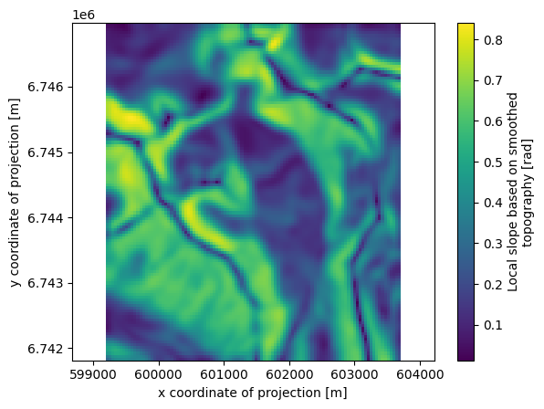
f, (ax1, ax2) = plt.subplots(1, 2, figsize=(14, 6))
graphics.plot_raster(gdir, var_name='aspect', cmap='twilight', ax=ax1)
graphics.plot_raster(gdir, var_name='oggm_mb_above_z', ax=ax2)
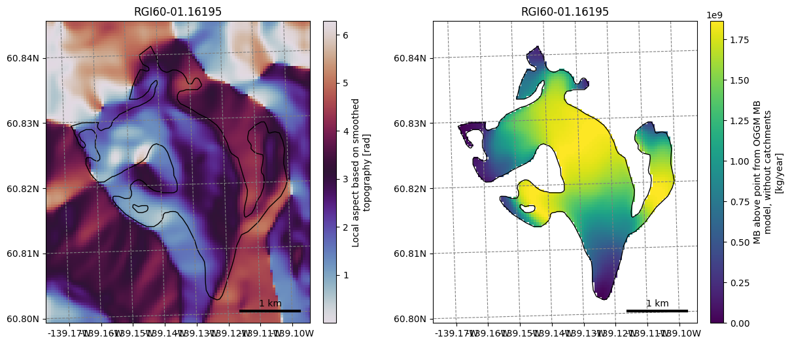
Not convinced yet? Let’s spend 10 more minutes to apply a (very simple) machine learning workflow#
Retrieve these attributes at point locations#
For this glacier, we have ice thickness observations from GlaThiDa. Let’s make a table out of it:
df = df_gtd[['thickness', 'x_proj', 'y_proj', 'i_grid', 'j_grid', 'ij_grid']].copy()
# check that there are no NaN values in the data (otherwise, we would remove them)
assert np.any(~df.isna())
Plot the data again:
geom = gdir.read_shapefile('outlines')
f, ax = plt.subplots()
df.plot.scatter(x='x_proj', y='y_proj', c='thickness', cmap='viridis', s=10, ax=ax)
geom.plot(ax=ax, facecolor='none', edgecolor='k');
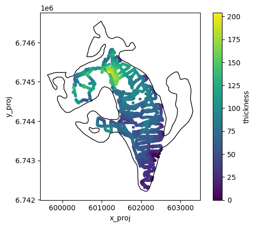
Method 1: interpolation#
The measurement points of this dataset are very frequent and close to each other. There are plenty of them:
len(df)
3406
Here, we will keep them all and interpolate the variables of interest at the point’s location. We use xarray for this:
vns = ['topo',
'slope',
'slope_factor',
'aspect',
'dis_from_border',
'catchment_area',
'lin_mb_above_z',
'oggm_mb_above_z',
'millan_v',
'itslive_v',
'hugonnet_dhdt',
]
# Interpolate (bilinear)
for vn in vns:
df[vn] = ds[vn].interp(x=('z', df.x_proj), y=('z', df.y_proj))
We remove those rows with NaN values (mostly from Millan velocities) to have a fair comparison
df = df.dropna()
Let’s see how these variables can explain the measured ice thickness:
f, (ax1, ax2, ax3, ax4) = plt.subplots(1, 4, figsize=(16, 4))
df.plot.scatter(x='dis_from_border', y='thickness', ax=ax1); ax1.set_title('dis_from_border')
df.plot.scatter(x='slope', y='thickness', ax=ax2); ax2.set_title('slope')
df.plot.scatter(x='oggm_mb_above_z', y='thickness', ax=ax3); ax3.set_title('oggm_mb_above_z');
df.plot.scatter(x='hugonnet_dhdt', y='thickness', ax=ax4); ax3.set_title('hugonnet_dhdt');
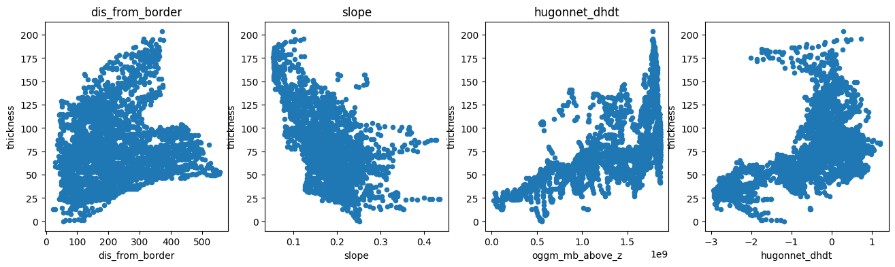
There is a negative correlation with slope (as expected), a positive correlation with the mass-flux (oggm_mb_above_z), and a slight positive correlation with the distance from the glacier boundaries. There is also some correlation with ice velocity, but not a strong one:
f, (ax1, ax2) = plt.subplots(1, 2, figsize=(12, 5))
df.plot.scatter(x='millan_v', y='thickness', ax=ax1); ax1.set_title('millan_v')
df.plot.scatter(x='itslive_v', y='thickness', ax=ax2); ax2.set_title('itslive_v');
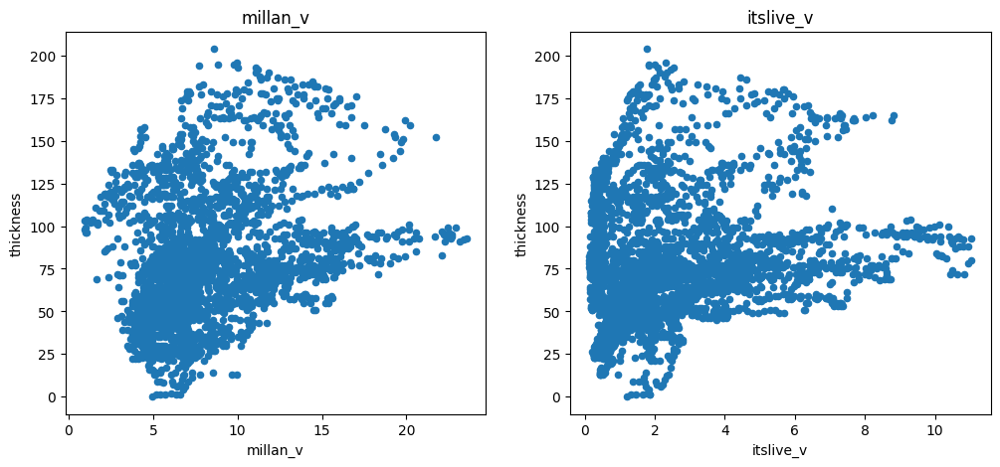
Method 2: aggregated per grid point#
There are so many points that much of the information obtained by OGGM is interpolated and is therefore not bringing much new information to a statistical model. A way to deal with this is to aggregate all the measurement points per grid point and to average them. Let’s do this:
df_agg = df.copy()
df_agg = df_agg.groupby('ij_grid').mean()
# Conversion does not preserve ints
df_agg['i'] = df_agg['i_grid'].astype(int)
df_agg['j'] = df_agg['j_grid'].astype(int)
len(df_agg)
977
# Select
for vn in vns:
df_agg[vn] = ds[vn].isel(x=('z', df_agg['i']), y=('z', df_agg['j']))
We now have 9 times fewer points, but the main features of the data remain unchanged:
f, (ax1, ax2, ax3, ax4) = plt.subplots(1, 4, figsize=(16, 4))
df_agg.plot.scatter(x='dis_from_border', y='thickness', ax=ax1); ax1.set_title('dis_from_border')
df_agg.plot.scatter(x='slope', y='thickness', ax=ax2); ax2.set_title('slope')
df_agg.plot.scatter(x='oggm_mb_above_z', y='thickness', ax=ax3); ax3.set_title('oggm_mb_above_z');
df_agg.plot.scatter(x='hugonnet_dhdt', y='thickness', ax=ax4); ax3.set_title('hugonnet_dhdt');
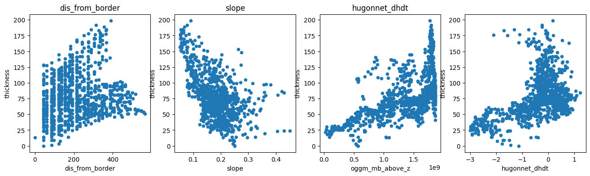
Build a statistical model#
Let’s use scikit-learn to build a very simple linear model of ice-thickness. First, we have to acknowledge that there is a correlation between many of the explanatory variables we will use:
import seaborn as sns
plt.figure(figsize=(10, 8))
sns.heatmap(df.corr(), cmap='RdBu');
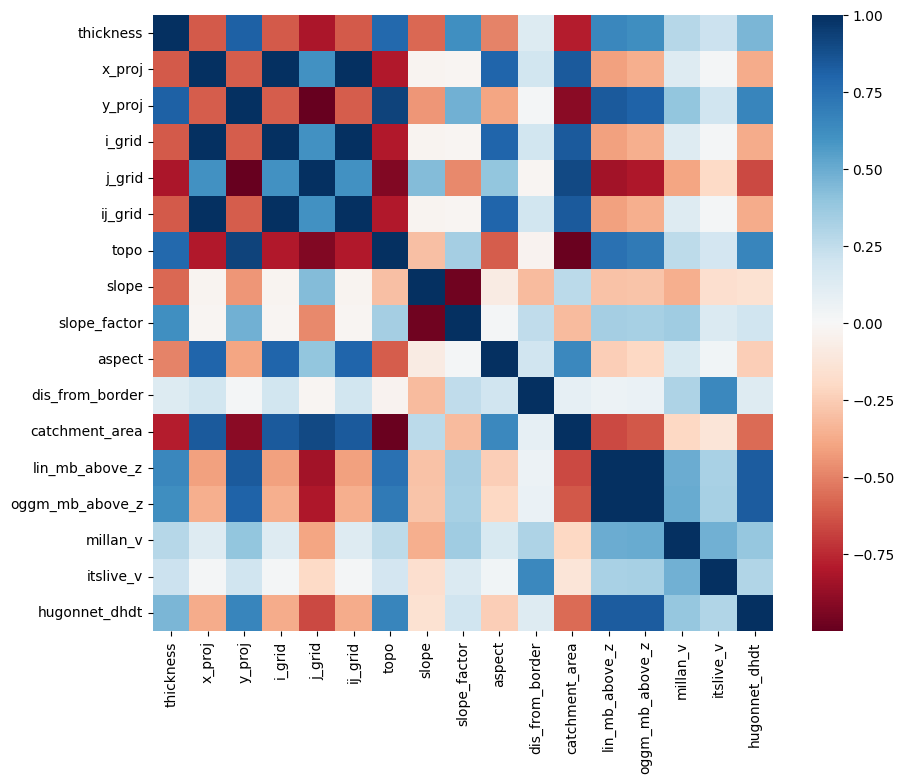
This is a problem for linear regression models, which cannot deal well with correlated explanatory variables. We have to do a so-called “feature selection”, i.e. keep only the variables which are independently important to explain the outcome.
For the sake of simplicity, let’s use the Lasso method to help us out:
import warnings
warnings.filterwarnings("ignore") # sklearn sends a lot of warnings
# Scikit learn (can be installed e.g. via conda install -c anaconda scikit-learn)
from sklearn.linear_model import LassoCV
from sklearn.model_selection import KFold
# Prepare our data
df = df.dropna()
# Variable to model
target = df['thickness']
# Predictors - remove x and y (redundant with lon lat)
# Normalize it in order to be able to compare the factors
data = df.drop(['thickness', 'x_proj', 'y_proj', 'i_grid', 'j_grid', 'ij_grid'], axis=1).copy()
data_mean = data.mean()
data_std = data.std()
data = (data - data_mean) / data_std
# Use cross-validation to select the regularization parameter
lasso_cv = LassoCV(cv=5, random_state=0)
lasso_cv.fit(data.values, target.values)
LassoCV(cv=5, random_state=0)In a Jupyter environment, please rerun this cell to show the HTML representation or trust the notebook.
On GitHub, the HTML representation is unable to render, please try loading this page with nbviewer.org.
Parameters
We now have a statistical model trained on the full dataset. Let’s see how it compares to the calibration data:
odf = df.copy()
odf['thick_predicted'] = lasso_cv.predict(data.values)
f, ax = plt.subplots(figsize=(6, 6))
odf.plot.scatter(x='thickness', y='thick_predicted', ax=ax)
plt.xlim([-25, 220])
plt.ylim([-25, 220]);
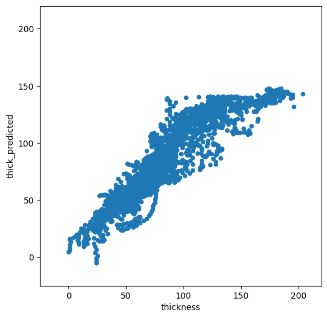
Not too bad. It is doing OK for low thicknesses, but high thickness are strongly underestimated. Which explanatory variables did the model choose as being the most important?
predictors = pd.Series(lasso_cv.coef_, index=data.columns)
predictors
topo -26.349444
slope -5.317532
slope_factor 8.545106
aspect -8.275107
dis_from_border 6.134154
catchment_area -37.155245
lin_mb_above_z 18.518913
oggm_mb_above_z 0.000000
millan_v -2.277471
itslive_v -0.982519
hugonnet_dhdt -6.787095
dtype: float64
This is interesting. If we look at the correlation of the error with the variables of importance, one sees that there is a large correlation between the error and the spatial variables:
odf['error'] = np.abs(odf['thick_predicted'] - odf['thickness'])
odf.corr()['error'].loc[predictors.loc[predictors != 0].index]
topo 0.337517
slope -0.187259
slope_factor 0.223775
aspect -0.251635
dis_from_border 0.039196
catchment_area -0.357454
lin_mb_above_z 0.248110
millan_v 0.101737
itslive_v 0.119478
hugonnet_dhdt 0.109385
Name: error, dtype: float64
Furthermore, the model is not very robust. Let’s use cross-validation to check our model parameters:
k_fold = KFold(4, random_state=0, shuffle=True)
for k, (train, test) in enumerate(k_fold.split(data.values, target.values)):
lasso_cv.fit(data.values[train], target.values[train])
print("[fold {0}] alpha: {1:.5f}, score (r^2): {2:.5f}".
format(k, lasso_cv.alpha_, lasso_cv.score(data.values[test], target.values[test])))
[fold 0] alpha: 0.02783, score (r^2): 0.84413
[fold 1] alpha: 0.02795, score (r^2): 0.83290
[fold 2] alpha: 0.02859, score (r^2): 0.82298
[fold 3] alpha: 0.02785, score (r^2): 0.83720
The fact that the hyperparameter alpha and the score change that much between iterations is a sign that the model isn’t very robust.
Our model is not great, but… let’s apply it#
In order to apply the model to our entre glacier, we have to get the explanatory variables from the gridded dataset again:
# Add variables we are missing
lon, lat = gdir.grid.ll_coordinates
ds['lon'] = (('y', 'x'), lon)
ds['lat'] = (('y', 'x'), lat)
# Generate our dataset
pred_data = pd.DataFrame()
for vn in data.columns:
# only take glacier gridpoints
# and only take those "gridpoints" where millan velocities is not NaN
pred_data[vn] = ds[vn].data[(ds.glacier_mask == 1) & (~np.isnan(ds.millan_v))]
# Normalize using the same normalization constants
pred_data = (pred_data - data_mean) / data_std
# Apply the model
pred_data['thick'] = lasso_cv.predict(pred_data.values)
# For the sake of physics, clip negative thickness values...
pred_data['thick'] = np.clip(pred_data['thick'], 0, None)
# Back to 2d and in xarray
var = ds[vn].data * np.nan
var[(ds.glacier_mask == 1) & (~np.isnan(ds.millan_v))] = pred_data['thick']
ds['linear_model_thick'] = (('y', 'x'), var)
ds['linear_model_thick'].attrs['description'] = 'Predicted thickness'
ds['linear_model_thick'].attrs['units'] = 'm'
ds['linear_model_thick'].plot();
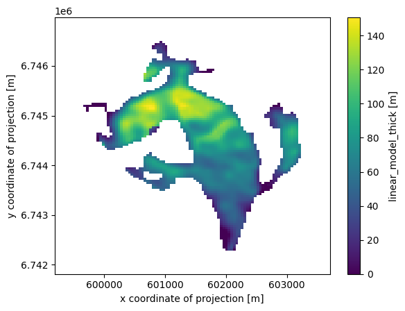
Take home points#
OGGM provides preprocessed data from different sources on the same grid
we have shown how to compute gridded attributes from OGGM glaciers such as slope, aspect, or catchments
we used two methods to extract these data at point locations: with interpolation or with aggregated averages on each grid point
as an application example, we trained a linear regression model to predict the ice thickness of this glacier at unseen locations
The model we developed was quite bad, and we used quite lousy statistics. If I had more time to make it better, I would:
make a pre-selection of meaningful predictors to avoid discontinuities
use a non-linear model
use cross-validation to better asses the true skill of the model
…
What’s next?#
return to the OGGM documentation
back to the table of contents
Bonus: how does the statistical model compare to OGGM “out-of the box” and other thickness products?#
# Write our thickness estimates back to disk
ds.to_netcdf(gdir.get_filepath('gridded_data'))
# Distribute OGGM thickness using default values only
workflow.execute_entity_task(tasks.distribute_thickness_per_altitude, gdirs);
2026-03-09 20:55:27: oggm.workflow: Execute entity tasks [distribute_thickness_per_altitude] on 1 glaciers
with xr.open_dataset(gdir.get_filepath('gridded_data')) as ds:
ds = ds.load()
df_agg['oggm_thick'] = ds.distributed_thickness.isel(x=('z', df_agg['i']), y=('z', df_agg['j']))
df_agg['linear_model_thick'] = ds.linear_model_thick.isel(x=('z', df_agg['i']), y=('z', df_agg['j']))
df_agg['millan_thick'] = ds.millan_ice_thickness.isel(x=('z', df_agg['i']), y=('z', df_agg['j']))
df_agg['consensus_thick'] = ds.consensus_ice_thickness.isel(x=('z', df_agg['i']), y=('z', df_agg['j']))
f, ((ax1, ax2), (ax3, ax4)) = plt.subplots(
2, 2, figsize=(12, 10), constrained_layout=True
)
vmin= 0
vmax = ds[['linear_model_thick','distributed_thickness','millan_ice_thickness','consensus_ice_thickness']].to_dataframe().max().max()*1.05
im1 = ds['linear_model_thick'].plot(ax=ax1, vmin=vmin, vmax=vmax, add_colorbar=False)
ds['distributed_thickness'].plot(ax=ax2, vmin=vmin, vmax=vmax, add_colorbar=False)
ds['millan_ice_thickness'].where(ds.glacier_mask).plot(ax=ax3, vmin=vmin, vmax=vmax, add_colorbar=False)
ds['consensus_ice_thickness'].plot(ax=ax4, vmin=vmin, vmax=vmax, add_colorbar=False)
ax1.set_title('Statistical model')
ax2.set_title('OGGM')
ax3.set_title('Millan 2022')
ax4.set_title('Farinotti 2019')
cbar = f.colorbar(im1, ax=[ax1, ax2, ax3, ax4], shrink=0.8, location='right', pad=0.02)
cbar.set_label("Ice thickness (m)");
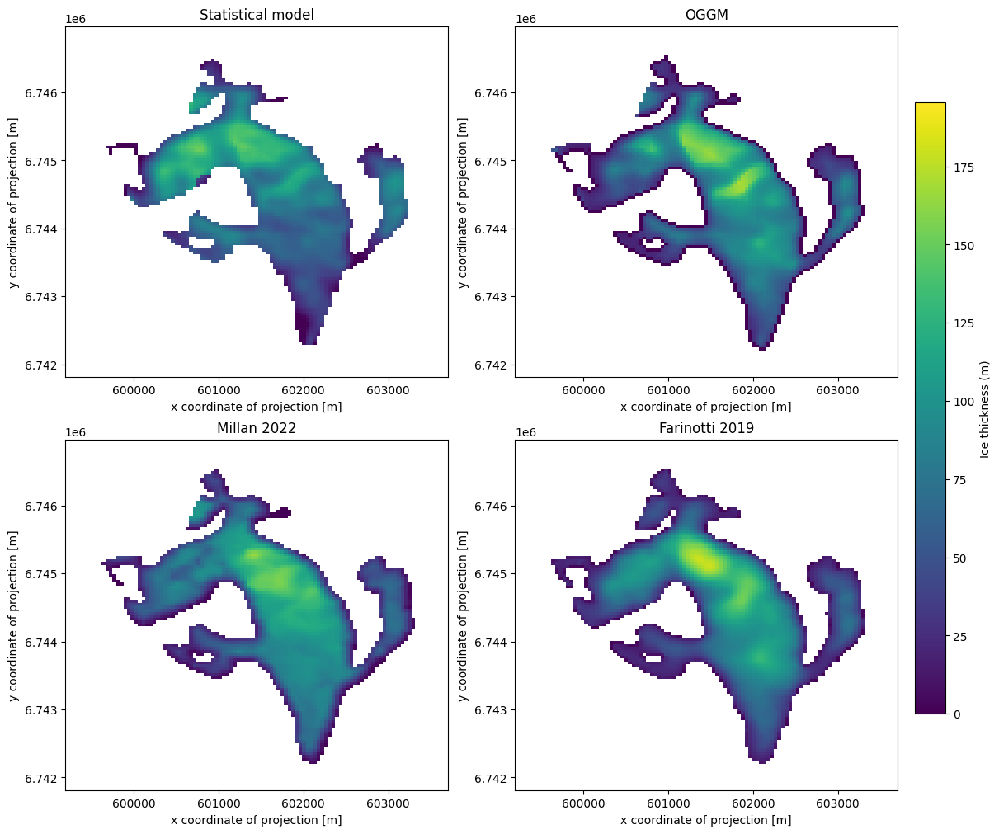
## check if there are no NaN values
assert np.any(~np.isnan(df_agg))
###
f, ((ax1, ax2), (ax3, ax4)) = plt.subplots(2, 2, figsize=(12, 10))
df_agg.plot.scatter(x='thickness', y='linear_model_thick', ax=ax1)
ax1.set_xlim([-25, 220]); ax1.set_ylim([-25, 220]); ax1.set_title('Statistical model')
df_agg.plot.scatter(x='thickness', y='oggm_thick', ax=ax2)
ax2.set_xlim([-25, 220]); ax2.set_ylim([-25, 220]); ax2.set_title('OGGM')
df_agg.plot.scatter(x='thickness', y='millan_thick', ax=ax3)
ax3.set_xlim([-25, 220]); ax3.set_ylim([-25, 220]); ax3.set_title('Millan 2022')
df_agg.plot.scatter(x='thickness', y='consensus_thick', ax=ax4)
ax4.set_xlim([-25, 220]); ax4.set_ylim([-25, 220]); ax4.set_title('Farinotti 2019');
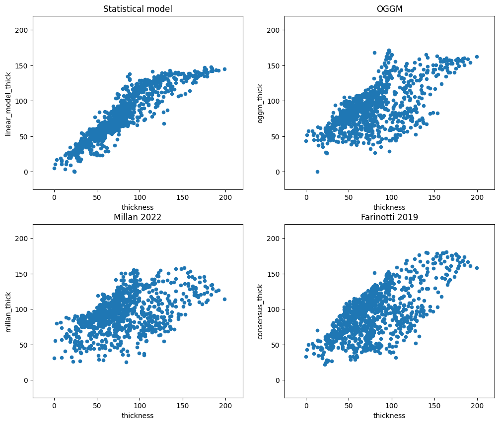